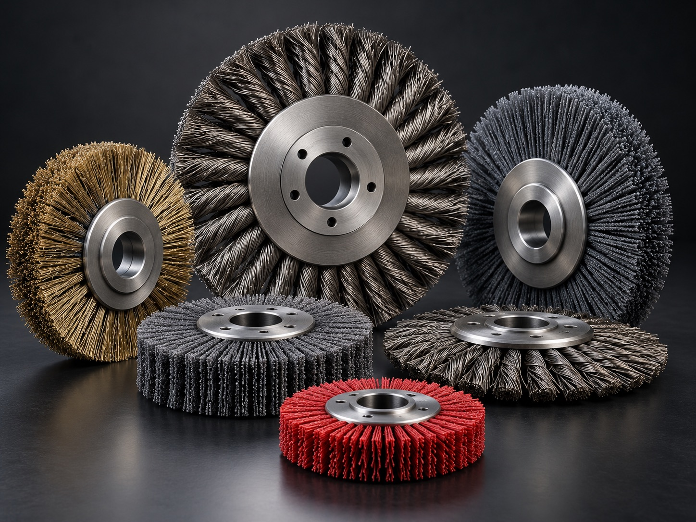

Wire disc brushes
For surface cleaning and preparation where wire contact is appropriate. Workpiece material, contamination, surface condition and machine setup all affect selection.
Home / Product families / Disc & face brushes
BROAD FACE CONTACT
Disc and face brush formats can cover a defined surface area for cleaning, deburring or finish preparation. The right build depends on the workpiece, contact profile, machine interface and finish target.
Request a disc brush quote
For surface cleaning and preparation where wire contact is appropriate. Workpiece material, contamination, surface condition and machine setup all affect selection.
For non-metallic abrasive contact directions. Grain, filament stiffness, contact pressure and substrate compatibility should be reviewed together.
Share the mounting arrangement and contact area. Hub, face profile, fill distribution and overall envelope are reviewed against the intended equipment.
APPLICATION REVIEW
A drawing, machine photo or existing brush can clarify fitment and contact. Final design details and operating limits require engineering confirmation.
| Workpiece | Material, coating, geometry and surfaces to protect |
|---|---|
| Operation | Cleaning, deburring, blending or finish preparation |
| Contact area | Target face, edge or profile; coverage and access needs |
| Machine fit | Tool or spindle, hub / arbor interface and operating direction |
| Target result | Residue or burr to remove, finish reference and downstream process |
Send the workpiece, mounting details and desired result. Ferrabrio can review a custom disc or face brush configuration before quotation.